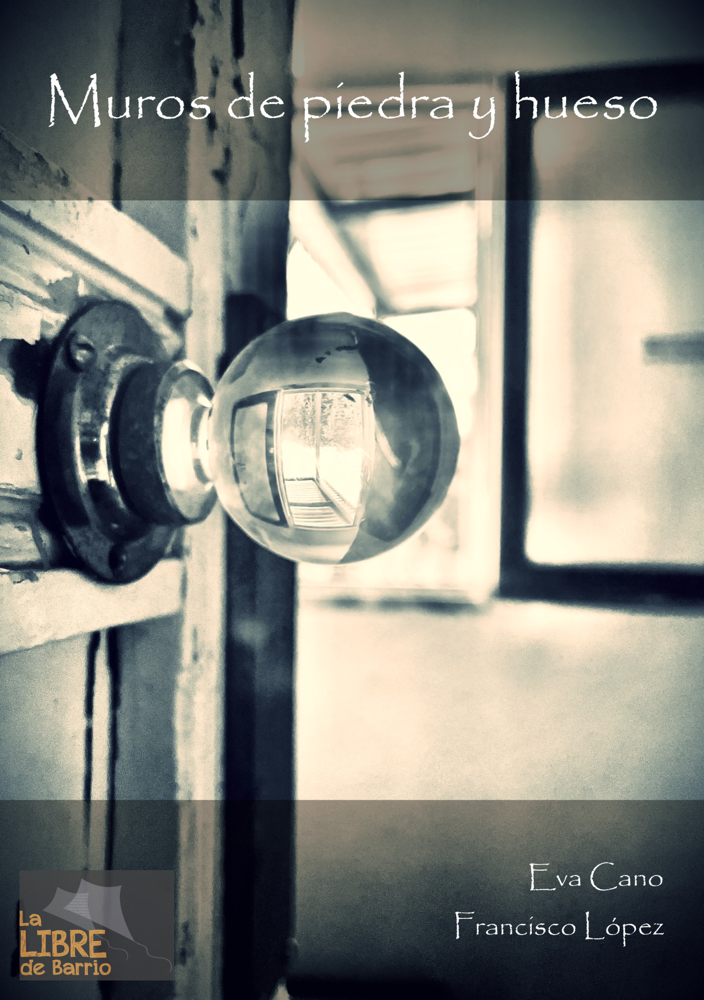

Narrativa
Muros de piedra y Hueso
Una obra de atmósfera íntima, construida desde los límites de la memoria, la casa, el cuerpo y aquello que permanece adherido a los lugares.
- Autores
- Eva Cano y Francisco López
- Editorial
- Impermanente Ediciones